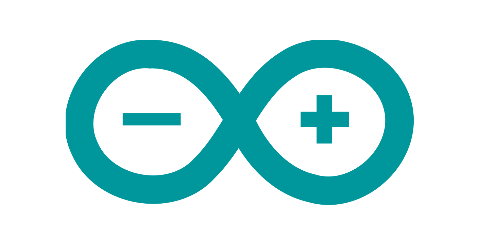

Qu'est-ce qu'est Arduino?
Arduino est une plateforme de prototypage (open-source), écrit en C et en C++, permettant de contrôler la carte électronique ArduinoCard et d’envoyer des signaux basés sur la carte. Le langage est basé sur du C++ et est compilé avec avr-g++.
